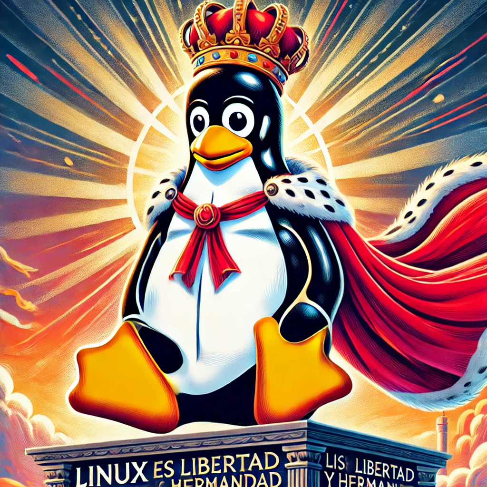

En un mundo de ventanas cerradas, yo elijo LIBERTAD, Linux es mi camino, mi codigo, mi verdad. Sin cadenas ni barreras, en la terminal me expreso, con cada linea de comando, mi espiritu progreso. Desde el kernel hasta el shell, todo es personalizable, en este universo abierto, todo es realizable. No hay virus que me frene, ni sistema que me atrape, con Linux en mi maquina, mi mente se destape.
